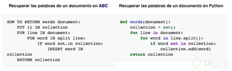
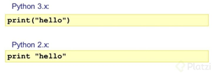
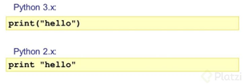

Desarrollo
Historia y evolución de PYTHON
En las navidades de 1989 Van Rossum, mientras trabajaba en un centro de investigación holandés (CWI), decidió empezar un nuevo proyecto como pasatiempo personal. Pensó en darle continuidad a ABC, un lenguaje de programación que se desarrolló en el mismo centro en el que estaba trabajando.
ABC fue desarrollado a principios de los 80s como alternativa a BASIC, fue pensado para principiantes por su facilidad de aprendizaje y uso. Su código era compacto pero legible.
El proyecto no trascendió ya que el hardware disponible en la época hacía difícil su uso. Así que Van Rossum le dio una segunda vida creando Python.
En 1991, Van Rossum publicó el código de la versión 0.9.0 en alt.sources. En esta versión ya teníamos disponibles clases con herencias, manejo de excepciones, funciones y los tipos modulares.
En esta versión aparece un sistema de módulos adoptado de Modula-3, un lenguaje de programación estructurado y modular, el cual Guido describe como una de las mayores unidades de programación de Python. Por ejemplo, el modelo de excepciones de Python es parecido al de Modula-3.
Para 1994 se creó comp.lang.python, un foro de discusión de Python que marcó un hito en su popularidad y multiplicó su cantidad de usuarios.
 

Versiones
1.0
Para este mismo año, Python llega a la versión 1.0 que incluyó herramientas de la programación funcional como lambda, reduce, filter y map.
La Free Software Foundation (FSF), fundación creada por Stallman con el objetivo de incentivar el Software Libre, argumentó que la cláusula era incompatible con GNU GPL. Así que acordaron cambiar Python a una licencia de Software Libre, que lo haría compatible con GPL.
2.0
Para Python 2.0 se incluyó la generación de listas, una de las características más importantes del lenguaje de programación funcional Haskell. Además, incluyó un sistema de recolección de basura capaz de recolectar referencias cíclicas.
En 2001, se crea la Python Software Foundation, la cual a partir de Python 2.1 es dueña de todo el código, documentación y especificaciones del lenguaje. La fundación se basó en el modelo de la Apache Software Foundation.
3.0
La última gran actualización de Python fue en 2008 con Python 3.0 con el PEP 3000, diseñado para rectificar fallas fundamentales en el diseño del lenguaje.
Python 3.0 rompe la compatibilidad hacia atrás del lenguaje, ya que el código de Python 2.x no necesariamente debe correr en Python 3.0 sin modificación alguna.
Python 3.0 ha hecho énfasis en eliminar constructores duplicados y módulos con el objetivo de cumplir la regla de “tener solo un modo obvio de hacer las cosas”.
Aplicaciones PYTHON
° Inteligencia artificial
° Big Data
° Data Science
° Frameworks
° Desarrollo web